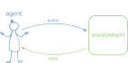
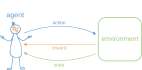
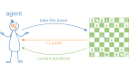
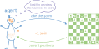
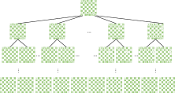
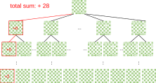
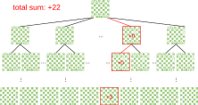
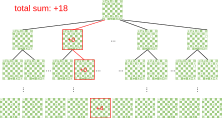
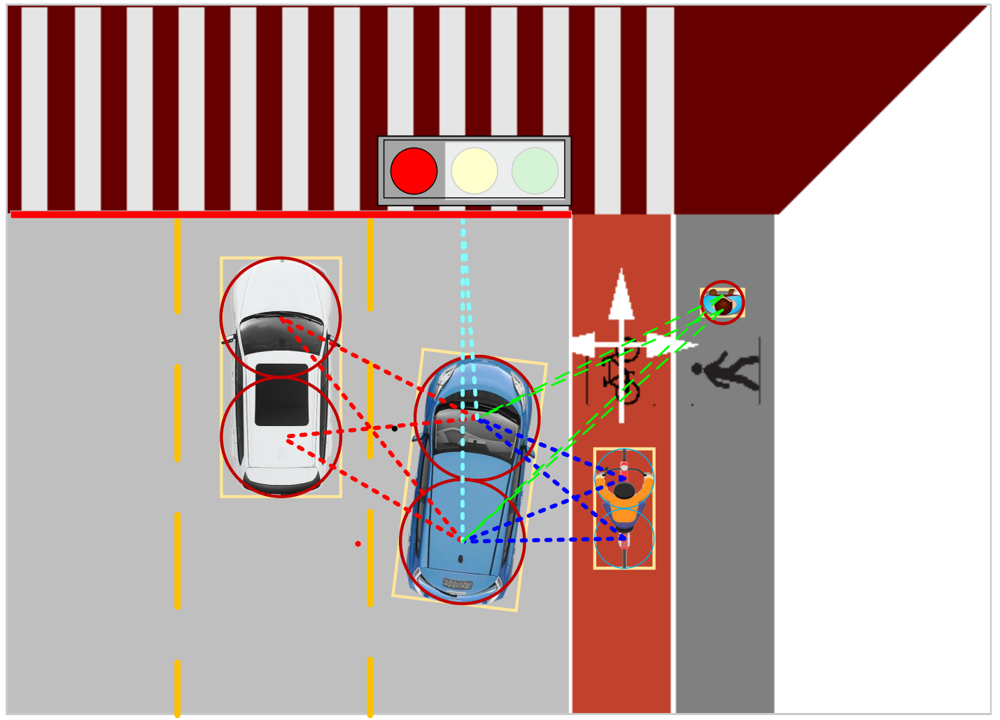
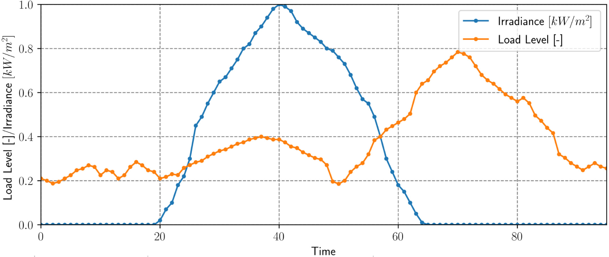

Micro-Degree Artificial Intelligence and Society
– Technical Aspects of AI –
Lecture 3.6: Reinforcement Learning


Types of Machine Learning
So far:
- Supervised Learning: Learning from examples (pairs of attributes and classes or target values), recognizing known patterns in unknown data
→ Clear relationship between data point and optimal output value. - Unsupervised Learning: Finding unknown patterns in data that only have attributes but no classes or target values.
→ No inherent relationship between data point and output value.
In between: Reinforcement Learning
→ Weak relationship between data point and optimal output value.
Basic Idea: Reinforcement Learning




When is Reinforcement Learning Suitable?
- The environment is complex, with many possible states, but it can be simulated well (Example: Atari computer games).
- The only way to get information about the environment is to interact with it.
Source: Greg Surma, Atari - Solving Games with AI.
Challenges
- It can happen that an action yields no or fewer points than another action, but in the long run leads to a higher total score.
- A balance must be found between exploring unknown states and exploiting known profitable actions.
- There can be many possible combinations of agent actions and environment states. Thus, not all combinations can be tried out (brute-forcing) – a more intelligent way is needed to find an optimal strategy.
Monte Carlo Algorithm
- Idea: try random paths through the "decision tree".
- Calculate the total sum of rewards along each path.
- The "value" of each action is the average of the rewards achieved across all paths.




AlphaGo
- Challenge: The game of Go has about 2*10170 possible board positions. Trying all possible positions is absolutely impossible.
- For a long time, good performance in Go was considered unreachable for computers.
- Solution: The AlphaGo program from Google DeepMind was trained completely without human input using a Monte Carlo algorithm by playing against itself.
- Result: In March 2016, AlphaGo won 4 out of 5 games against one of the strongest human players (Lee Sedol). Since then, the game has been revolutionized by the availability of strong AI players.

Autonomous Driving
- Challenge: Intersections with mixed traffic (cars, pedestrians, bicycles) are among the most complex decision-making situations in autonomous driving.
- Reinforcement learning that optimizes vehicle behavior in various environmental situations and includes strict safety rules delivers promising results.


Source: Ren et al., Self-learned Intelligence for Integrated Decision and Control of Automated Vehicles at Signalized Intersections, arXiv (2021).
PV Inverter
- Challenge: Photovoltaic systems produce widely varying amounts of electricity depending on solar radiation. If too much electricity is produced, it can overload the grid and the output of PV panels must be limited via their inverters.
- Solution: The optimal local control of PV inverters (agents) can be learned using reinforcement learning. This approach is simpler and more robust than classical optimization approaches.


Source: Vergara et al., Optimal dispatch of PV inverters in unbalanced distribution systems using Reinforcement Learning, Int. J. Elect. Power & Energy Sys. (2022).
Summary
- Reinforcement learning is well-suited for problems where an agent must behave optimally in a complex environment with many decision possibilities.
- In reinforcement learning, an agent learns an optimal strategy through continuous interaction with the environment and rewards for actions.
- The Monte Carlo algorithm provides a way to learn optimal strategies by randomly trying out chains of decisions.
- Examples of successful applications of reinforcement learning include games, autonomous driving, and local control of PV systems.
Outlook Next Lecture